התאמה בין מבנה לתפקוד
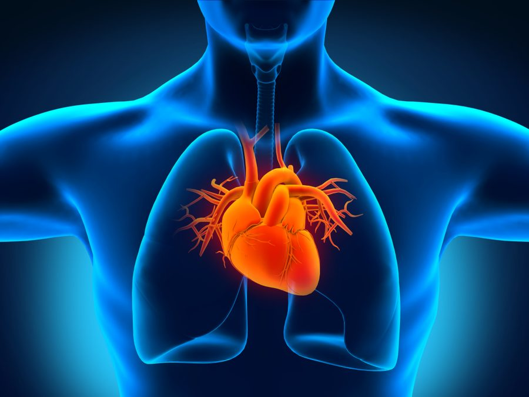
מקור: מט״חהלב בגודל של אגרוף בערך. רוב הדופן שלו בנויה מרקמת שריר: שריר הלב.
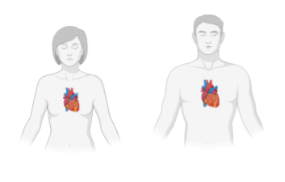
מקור: מט״חרמז: בגוף יש בין 10 ל־40 מיליארד נימים, וחלק מהדם זורם למעלה, אל הראש.
הלב מתכווץ, והלחץ שנוצר מזרים את הדם במהירות לכל חלקי הגוף: גם דרך מיליארדי נימים, וגם נגד כוח הכובד.
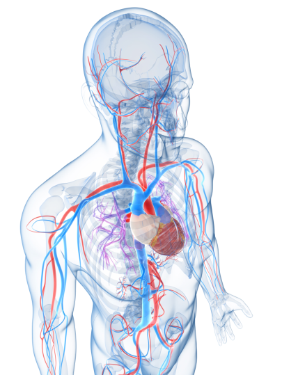
מקור: מט״חהזרמת דם עשיר בחמצן לכל הגוף
הזרמת דם דל בחמצן לריאות
קליטת הדם שחוזר מהגוף, דל בחמצן
קליטת הדם שחוזר מהריאות, עשיר בחמצן
השאלה של השיעור: איך המבנה של הלב מתאים לכל אחד מהתפקידים?
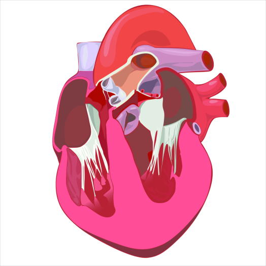
חתך אורך של הלב · מקור: מט״ח| תפקיד | חלל בלב | כלי דם |
|---|---|---|
| הזרמה לגוף | חדר שמאלי | אבי העורקים |
| הזרמה לריאות | חדר ימני | עורק הריאה |
| קליטה מהגוף | עלייה ימנית | הוורידים הנבובים (עליון ותחתון) |
| קליטה מהריאות | עלייה שמאלית | ורידי הריאה |
באיור, ימין ושמאל הם של האדם. לכן הצד הימני של הלב מופיע משמאלנו.
הדרך הבטוחה לזהות: אבי העורקים יוצא מהחדר השמאלי, ועורק הריאה יוצא מהחדר הימני.
באיור כתוב "שסתום". בשיעור נשתמש במילה "מסתם".
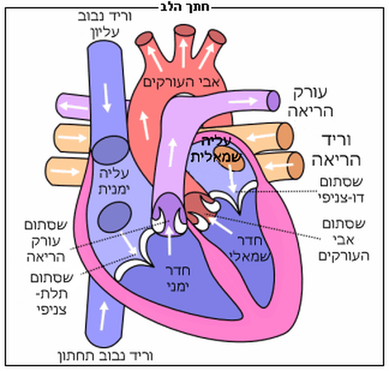
מקור: מט״חהעליות מתכווצות, והדם עובר לחדרים. אחר כך החדרים מתכווצים, והדם יוצא לעורקים. בין התכווצות להתכווצות הלב נרפה ומתמלא בדם.
המחיצה מפרידה לחלוטין בין החצי הימני לחצי השמאלי. לכן הדם העשיר בחמצן לא מתערבב עם הדם הדל בחמצן, ולגוף מגיע דם עשיר בחמצן.
לעתים רחוקות נולדים תינוקות עם פתח במחיצה. מה יקרה לדם שלהם?
דם עשיר בחמצן ודם דל בחמצן מתערבבים דרך הפתח. את הפגם אפשר לתקן בניתוח.
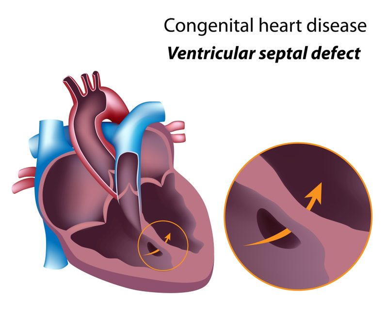
פתח במחיצה בין החדרים · מקור: מט״חנפתח כשהעלייה מתכווצת. נסגר כשהחדר מתכווץ, והדם לא חוזר לעלייה.
נפתח כשהחדר מתכווץ. נסגר כשהחדר נרפה, והדם לא חוזר מהעורק לחדר.
המסתמים נפתחים ונסגרים בהשפעת הפרשי לחץ הדם משני צדיהם.
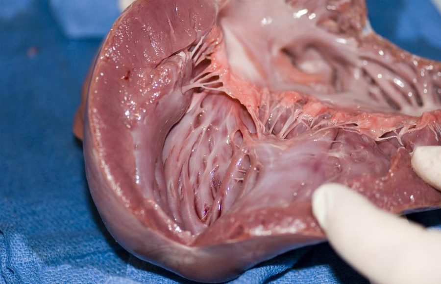
ניתוח לב · מקור: מט״חא. מסתם פגום גורם לזרימה לאחור. ערבוב נגרם מפתח במחיצה, לא ממסתם. בבגרות כ־70% מהנבחנים בחרו בתשובה ב.
שני קולות בכל פעימה. הקולות נוצרים מסגירת המסתמים: קודם המסתמים בין העליות לחדרים, ואחר כך המסתמים בין החדרים לעורקים.
העליות מזרימות דם לחדרים שמתחתן, מרחק קצר. החדר הימני מזרים דם לריאות. החדר השמאלי מזרים דם לכל הגוף, בלחץ הגבוה ביותר. בדופן העבה יש יותר תאי שריר, וההתכווצות שלה חזקה יותר.
על פי בגרות תשע״ז, שאלון 43381, שאלה 2
לא מהדם שזורם בתוך החללים: הדופן עבה, והדם בחללים לא מגיע לרוב תאי השריר. לשריר הלב יש כלי דם משלו: כלי הדם הכליליים.
"כליל" = כתר. כלי הדם מקיפים את הלב כמו כתר.
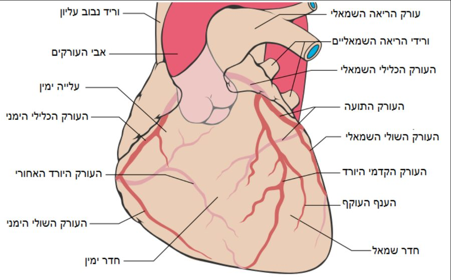
מקור: מט״חמשקעים של שומן מצרים את חלל העורק. כשהעורק נחסם, תאי שריר הלב שמעבר לחסימה לא מקבלים חמצן ומתים: אוטם שריר הלב (התקף לב).
טיפול נפוץ: צנתור, והחדרת תומכן (סטנט) שמרחיב את העורק.
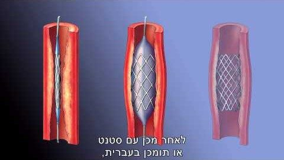
מקור: מט״חמכשיר אק״ג מודד את הפעילות החשמלית הזו.
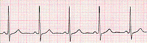
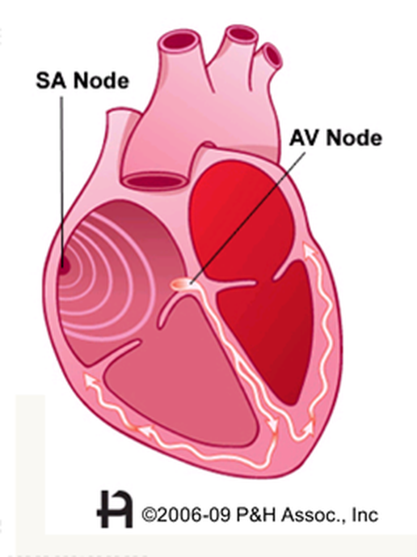
SA Node = קוצב הלב · מקור: מצגת קוצב הלבעצבים מהמוח וההורמון אדרנלין משנים את הקצב של קוצב הלב: במאמץ ובפחד הקצב עולה, ובמנוחה הוא יורד. הם משנים את הקצב, אבל הפעימה עצמה נוצרת בקוצב.
קוצב מלאכותי: כשהקוצב הטבעי לא פועל כראוי, משתילים בחזה מכשיר קטן. המכשיר שולח אותות חשמליים לשריר הלב.
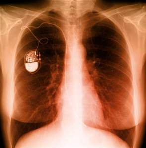
צילום רנטגן: קוצב מלאכותי בחזה| מבנה | תפקוד |
|---|---|
| מחיצה שלמה | אין ערבוב בין דם עשיר בחמצן לדם דל בחמצן |
| מסתמים | זרימה בכיוון אחד: עליות ← חדרים ← עורקים |
| דופן עבה בחדר השמאלי | הזרמת דם בלחץ גבוה לכל הגוף |
| דופן דקה בעליות | הזרמת דם למרחק קצר, לחדרים |
| דופן פנימית חלקה | חיכוך קטן בין הדם לדופן |
| כלי דם כליליים | אספקת חמצן וגלוקוז לתאי שריר הלב |
| קוצב הלב | אותות חשמליים והתכווצות סדירה של שריר הלב |
ג. העלייה הימנית קולטת את הדם שחוזר מהגוף בוורידים הנבובים.
ד. מהחדר השמאלי, דרך אבי העורקים וכל הגוף, ובחזרה בוורידים הנבובים לעלייה הימנית: המחזור הגדול כולו.
זיהוי המבנים על האיור, ואחר כך התאמה בין כל מבנה לתפקוד שלו.
היחידה מתבססת על חומרי מט״ח ומורחבת בחומרים נוספים